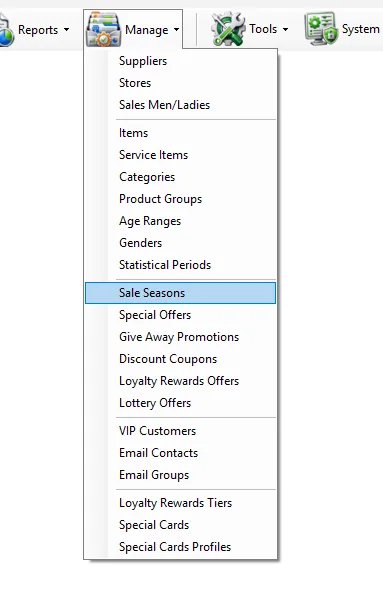
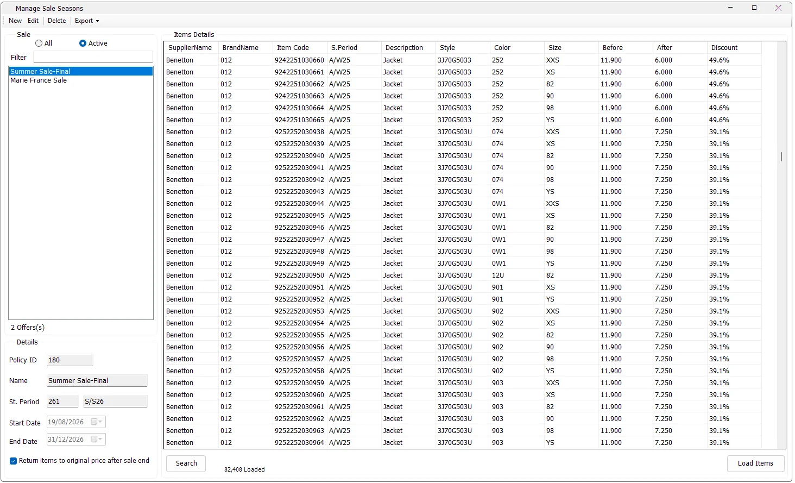

New promotion
Create a seasonal sale
Set the policy dates and Statistical Period, import the Item Codes with their sale prices and save the policy.
Sale Seasons define time-based merchandise sale policies in IMS. A policy has a name, Statistical Period, Start Date and End Date, plus an item list containing each Item Code's original price and sale price. When a sale is active, IMS applies the configured sale price and sale state to those items.


The Sale list on the left can be filtered before loading the policy details.
| Control | Behavior |
|---|---|
| Active | Shows policies whose End Date has not passed. This includes a sale currently running and a future sale that is already scheduled. |
| All | Shows all Sale Seasons, including expired policies. |
| Filter | Searches the Sale Season list by policy Name/Description. |
| Offers count | Shows the number of policies matching the current All/Active and text filters. |
| Field | Meaning |
|---|---|
| Policy ID | Unique Sale Season identifier. New policies receive the next available ID. |
| Name | Required Sale Season description, for example Summer Sale-Final. |
| St. Period | Statistical Period ID and Season label from Manage → Statistical Periods. |
| Start Date | Date on which the sale becomes applicable. |
| End Date | Last date of the sale policy. |
| Return items to original price after sale end | When selected, the policy is registered for the automatic return-to-original-price behavior after the sale ends. |
The right-hand grid shows the exact merchandise included in the Sale Season.
| Column | Meaning |
|---|---|
| SupplierName | Supplier assigned to the Item master. |
| BrandName | Brand assigned to the Item. |
| Item Code | IMS Item Code included in the policy. |
| S.Period | The item's own Statistical Period. |
| Description | Item description. |
| Style | Item Style/Article. |
| Color | Item Color Code. |
| Size | Item Size. |
| Before | Original/full item price. |
| After | Sale price assigned by this Sale Season. |
| Discount | Calculated discount percentage: 1 − After ÷ Before. |
In View mode, IMS does not need to keep every policy's item list permanently loaded. Select a Sale Season and click Load Items to retrieve its detailed merchandise list. The status below the grid shows the number of records loaded.
After the items are loaded, Search opens the Sale Season item-search window for the selected policy, allowing the user to locate sale merchandise by Item Code or Style.
IMS requires a Name, a valid Statistical Period, at least one sale Item, and an End Date that is not before the Start Date. A newly created policy cannot be created with an End Date already before the current server date.
The Sale Season item list is loaded from a tab-separated text file. IMS skips the first row as the header and expects each following row to provide:
| Column | Value |
|---|---|
| 1 | Item Code |
| 2 | Sale Price |
Before accepting the import, IMS validates each row against the Item master:
If validation fails, IMS creates a -ErrorLog.txt file beside the import file with the source row number and validation message.
Each policy keeps the Item Code and its sale price separately from the Item master. When the policy is active, IMS updates the affected items so their current selling price becomes the policy's After price and their Item State becomes Sale.
If a new Sale Season starts today or has already reached its Start Date, those prices are applied when the policy is saved. Future-dated policies are applied by the enabled Autos Sale Seasons process on their exact Start Date. Verify the company’s daily activity and actual item prices on the Start Date.
The Return items to original price after sale end option determines the intended end-of-sale pricing behavior:
| Setting | End-of-sale behavior |
|---|---|
| Selected | Registers automatic restoration after End Date. Scheduled processing restores original price and normal state and clears the active season for items still assigned to this policy. |
| Not selected | After End Date, scheduled processing retains the discounted price, sets the item to Outlet and clears its active sale-season link. |
While editing an existing policy, setting its End Date before today is treated as stopping the sale and IMS asks for confirmation.
Click Cancel to leave Edit mode without applying the changes.
Select the policy and click Delete. If the selected sale is currently within its Start/End date range, IMS asks whether the affected items should be returned to their original prices before the policy is deleted.
Deleting the policy also removes its stored sale-item list and its automatic return-to-price registration.
Export → Sale Prices creates the sale-pricing file for the selected policy in a folder chosen by the user. The exported data is built from the Sale Season item list and contains the item's Barcode, Item Code, Original Price and Sale Price in the format required by the IMS sale-price export workflow.
Sale Seasons rely heavily on Manage → Items. Supplier, Brand, Description, Style, Color, Size, Statistical Period and Original Price shown in this screen all come from the Item master. The Sale Season adds the temporary/seasonal After price and resulting discount.
Use Sale Seasons when a defined set of Item Codes should have explicit After prices for a scheduled period. Use Special Offers when the benefit depends on transaction conditions such as quantity, receipt total, customer category, Buy/Get, bundle, Cash Back or tiered discount rules.
New, Edit and Delete are protected by the IMS Manage Sales Settings access policy. The screen also respects the normal IMS database-connection, maintenance-mode and automation-blocking checks before protected changes are performed.
Set the policy dates and Statistical Period, import the Item Codes with their sale prices and save the policy.
Load Items and compare Before, After and Discount for each SKU.
Enable Return items to original price after sale end for policies that should automatically return to the normal full price.
Use Export → Sale Prices to create the policy's barcode/item pricing file.
The imported Item Codes determine merchandise eligibility; a Sale Season does not add customer-category or individual-store conditions. The Statistical Period identifies the policy. When active pricing is applied, POS uses the item's current selling price and records the actual amount on the sale. A linked return uses the original receipt's values and applicable return rules, not a newly advertised price.
When editing and replacing a policy's item list, items removed from that policy return to their original price and normal state. Retained items receive the active policy price. Stopping a policy while leaving return-to-original-price unselected retains its sale price with the ended-sale state; restoring original price changes current merchandise pricing, not past receipts.
Promotions & Loyalty overview.